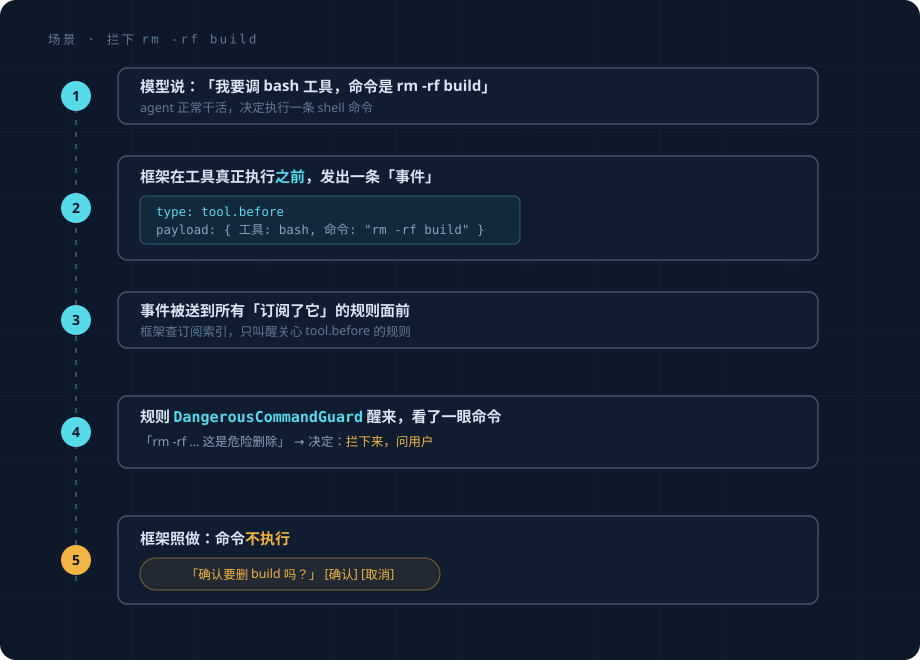
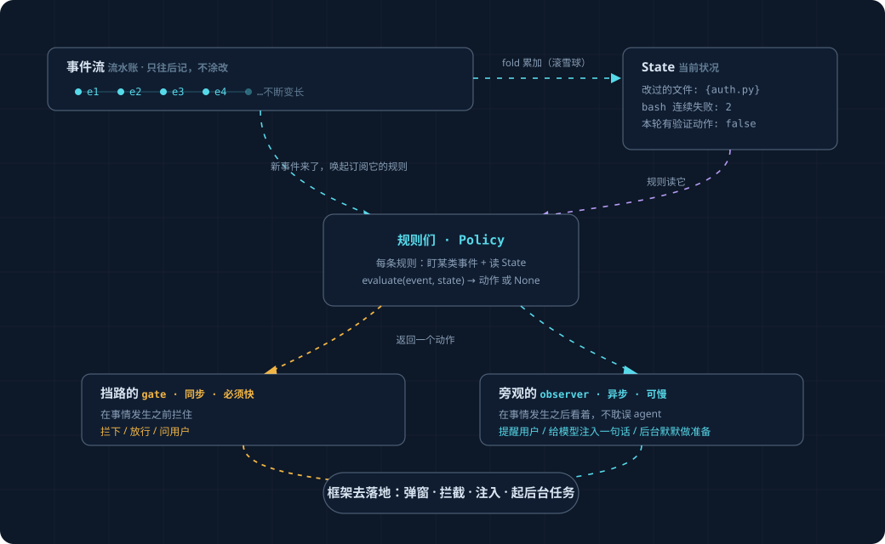

总览：跟着一个场景走一遍#
不堆术语，先看一件事从头到尾怎么发生。看完这一篇，整层在干嘛你就懂了。
场景：模型想跑 rm -rf build，框架把它拦下来#
agent 正在帮用户清理项目。某一刻，模型决定执行一条 shell 命令 rm -rf build。
我们希望框架在这条命令真正跑起来之前，看一眼，发现它危险，拦下来问用户。
整个过程是这样的：

就这么简单。现在把这五步里出现的几个概念，逐个讲清楚。
概念 1：事件（Event）#
事件 = "刚刚发生了一件事"的一条记录。 上面第②步那个带花括号的东西就是一条事件。
agent 干活的过程里，到处都在产生事件：
| 发生的事 | 事件 |
|---|---|
| 用户发了消息 | user.prompt_submitted |
| 模型开始/说完回复 | model.response_started / model.response_completed |
| 工具即将执行 | tool.before ← 第②步就是这条 |
| 工具执行完了 | tool.after |
| 某个文件被改了 | file.changed |
每条事件就是一个小数据包，记着"什么类型、什么时候、谁干的、相关的内容是什么"。
事件长什么样、字段有哪些，下一篇 events-and-state.md 细讲。
关键心智模型：把事件想成一条不断变长的流水账，只往后记、不涂改。系统里发生的一切 都在这条账上留一笔。你的主动规则不直接盯着 agent 内部，而是盯着这条流水账。
概念 2：规则（Policy）#
规则 = "盯着某类事件，事件来了就判断要不要出手"的一段逻辑。 第④步那条 DangerousCommandGuard 就是一条规则。
一条规则是一个普通 Python 类，说清三件事：
class DangerousCommandGuard:
# 1. 我盯着哪类事件？
on = {"tool.before"}
# 2. 事件来了，我怎么判断？
def evaluate(self, event):
命令 = event.payload["command"]
if "rm -rf" in 命令:
return 拦下来("这条命令会删文件，先确认") # 出手
return None # 不出手，放它过去
on 说"我只关心工具即将执行这类事件"，框架就只在这类事件发生时唤起它。
evaluate 拿到事件，看一眼，要么返回一个"动作"（出手），要么返回 None（不管）。
整个框架就是一堆这样的规则。加一条新主动能力 = 写一个新 Policy 类。 你以后想让框架 "发现没写测试就提醒""发现模型卡住了就介入"，都是再写一个这样的类，不用动框架内核。
概念 3：两种规则——"挡路的"和"旁观的"#
不是所有出手都一样。有两种本质不同的出手时机，框架把规则分成两类：
| 挡路的（gate） | 旁观的（observer） | |
|---|---|---|
| 它在哪出手 | 在事情发生之前，拦住 | 在事情发生之后，看着 |
| 例子 | "这命令危险，先别执行" | "你改了核心代码但没补测试，提醒一下" |
| 必须很快吗 | 必须。它挡在路中间，agent 在等它放行，它慢一毫秒 agent 就卡一毫秒 | 不必。它在旁边慢慢想，想完了再说，不耽误 agent |
| 出手方式 | 拦下 / 放行 / 要用户确认 | 给个提醒 / 后台默默做点准备 |
为什么非要分两类、不能合成一套？因为它们的时间要求是反的：挡路的必须快（不能让 agent 等），旁观的可以慢（慢点没关系，但不能反过来拖慢 agent）。把这两种揉一起，要么旁观的拖慢了 agent，要么挡路的为了快牺牲了能力。分开各管各的，互不拖累。
DangerousCommandGuard 是挡路的。"没补测试就提醒"是旁观的。规则怎么写、两类各有什么讲究，
execution-model.md 细讲。
概念 4：出手的方式（Action）#
规则的 evaluate 决定出手时，返回的不是随便什么东西，而是几种固定的"动作"之一：
| 动作 | 干什么 | 谁用 |
|---|---|---|
| 拦下/放行/问用户 | 挡住一个即将执行的工具 | 挡路的规则 |
| 提醒用户 | 弹个非打扰的提示 | 旁观的规则 |
| 给模型注入一句话 | 在模型下次思考前，悄悄塞一句提示（不打扰用户） | 旁观的规则 |
| 后台默默做准备 | 起一个只读的后台小任务，先把功课做了，有结论再决定要不要提醒 | 旁观的规则 |
规则只负责"决定出手 + 选哪种动作"，具体怎么落地（怎么弹窗、怎么拦、怎么注入）由框架做。 规则不碰这些脏活，所以规则能写得很短、很专注。
概念 5：状态（State）——这层为什么值得做#
到这你可能想：这不就是"在工具执行前插一段检查代码"吗？我直接挂个钩子不就行了，要这么一套框架干嘛？
对，如果每条规则都只看眼前这一件事，钩子确实够了，不需要这套框架。 这套框架真正值钱的地方， 在你要做这种规则的时候才显出来：
"模型连续三次调同一个工具都失败了，提醒用户它可能卡住了。"
注意"连续三次"——这条规则要判断，得记住前面发生过什么，不是看眼前一下。
钩子做这个会很别扭：你得自己在某个地方存一个计数器，每次失败手动加一、成功手动清零、还得管 多个会话别串台。每加一条"需要记忆"的规则，就手搓一个这样的容器，三五条之后一团乱。
事件驱动天然解决这个：既然每件事都记成了事件（那条流水账），"当前状况"就是把流水账从头 累一遍的结果。 想知道"这个工具最近失败几次"？数一遍账上这个工具的失败事件就行——不用你 手动维护计数器，它是事件的自然副产品。
这个"把一长串事件累加成当前状况"的动作，有个名字叫 fold（也叫 reduce）。别被词吓到， 就是滚雪球：从空白开始，一条条事件滚过去，雪球（状态）越滚越大，滚完就是"现在的状况"。

这个累加出来的"当前状况"就叫 State（状态）。规则的 evaluate 除了看当前这条事件，
还能读这个 State：
def evaluate(self, event, state):
if state.某工具连续失败次数 >= 3:
return 提醒("这个工具连续失败了，可能卡住了")
State 怎么从事件累加出来、为什么这么设计，events-and-state.md 细讲——那是整层的地基。
把五个概念串起来#

这就是全部。剩下的文档都是把这张图里某一块讲细：
events-and-state.md：事件长啥样、State 怎么 fold 出来execution-model.md：规则怎么写、两类规则的讲究policies-mvp.md：三条真规则当样板invariants.md：框架自己要守的底线（别绕成死循环）
这版刻意不做的事#
为了让地基清爽，下面这些砍掉了（归档在 _research_archive/，以后想要再加，加得上不返工）：
- 把事件落盘做到防崩溃恢复、防篡改——研究/生产级的可靠性装修。
- 离线回放（拿历史会话验证新规则误报率）——写论文才需要。
- 对抗安全（防恶意注入、密钥脱敏）——把对手当善意用户的简化下不需要。
- 复杂的打扰预算、自动熔断——先用最简单的冷却（同一提醒隔一阵才再来）顶着。
这版的目标只有一个：一个能跑、能不断加规则、规则能记住过去的事件驱动地基。